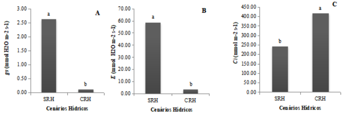

Resumo: O feijão-caupi (Vigna unguiculata (L.) Walp.) é uma espécie que pode ser cultivada sobre diferentes condições edafoclimáticos. O objetivo deste trabalho foi avaliar a resposta do feijão-caupi cultivado com diferentes fontes de nitrogênio em duas condições hídricas. O experimento foi conduzido em casa de vegetação num fatorial 2 (com e sem restrição hídrica) x 5 (tratamentos) e três blocos ao acaso. Os tratamentos corresponderam a inoculação com três estirpes de Bradyrhizobium sp. (AD4; AD8 e AP17), adubo mineral (30 kg ha-1) e o controle (sem inoculação e adubação). Cada estirpe correspondeu a um tratamento e foi inoculado 1 mL do crescimento bacteriano (109) em semente no momento da semeadura. Aos 20 dias após a emergência (DAE) metade do experimento foi submetido a um período de restrição hídrico com corte total da irrigação por 10 dias. Após esse período, as plantas foram irrigadas por 5 dias, e aos 35 DAE foi feita a coleta. Foi avaliado número de nódulos, massa seca dos nódulos, massa seca da parte aérea e intensidade de verde das folhas. Aos dez dias de suspensão hídrica, foi realizada a avaliação de trocas gasosas foliares, pela condutância estomática, taxa de fotossíntese líquida, transpiração, concentração interna de carbono e a fluorescência da clorofila a pela razão Fv/Fm. As estirpes AD4 e AP17 promoveram maior MSPA. Não houve efeito significativo para NN e MNS. A eficiência quântica do fotossistema II (Fv/Fm) não foi afetada durante o período de restrição hídrica. Houve uma redução da condutância estomática (gs), fotossíntese líquida (A) e transpiração (E).
Palavras Chave: Fixação biológica de nitrogênio (FBN), Restrição hídrica e Vigna unguiculata (L) Walp.
Abstract: Cowpea (Vigna unguiculata (L.) Walp.) is a species that can be cultivated under different soil and climate conditions. The objective of this study was to evaluate the response of cowpea grown with different nitrogen sources under two water conditions. The experiment was conducted in a greenhouse in a 2 (with and without water restriction) x 5 (treatments) factorial and three randomized blocks. The treatments corresponded to inoculation with three strains of Bradyrhizobium sp. (AD4; AD8 and AP17), mineral fertilizer (30 kg ha-1) and control (without inoculation and fertilization). Each strain corresponded to a treatment and 1 ml of bacterial growth (109) was inoculated into seeds at the time of sowing. At 20 days after emergence (DAE), half of the experiment was subjected to a period of water restriction with total irrigation cut for 10 days. After this period, the plants were irrigated for 5 days, and at 35 DAE the collection was carried out. The number of nodules, dry mass of nodules, dry mass of the aerial part and green intensity of the leaves were evaluated. After ten days of water suspension, leaf gas exchange was evaluated using stomatal conductance, net photosynthesis rate, transpiration, internal carbon concentration and chlorophyll a fluorescence using the Fv/Fm ratio. The AD4 and AP17 strains promoted greater MSPA. There was no significant effect for NN and MNS. The quantum efficiency of photosystem II (Fv/Fm) was not affected during the period of water restriction. There was a reduction in stomatal conductance (gs), net photosynthesis (A) and transpiration (E).
Keywords: Biological nitrogen fixation (BNF), Water restriction and Vigna unguiculata (L) Walp.
Resumen: El frijol caupí (Vigna unguiculata (L.) Walp.) es una especie que puede ser cultivada en diferentes condiciones edafoclimáticas. El objetivo de este trabajo fue evaluar la respuesta del frijol caupí cultivado con diferentes fuentes de nitrógeno en dos condiciones hídricas. El experimento se realizó en un invernadero en un diseño factorial 2 (con y sin restricción hídrica) x 5 (tratamientos) y tres bloques al azar. Los tratamientos consistieron en la inoculación con tres cepas de Bradyrhizobium sp. (AD4; AD8 y AP17), fertilizante mineral (30 kg ha-1) y el control (sin inoculación y fertilización). Cada cepa correspondió a un tratamiento y se inoculó 1 mL del crecimiento bacteriano (10^9) en la semilla en el momento de la siembra. A los 20 días después de la emergencia (DAE), la mitad del experimento fue sometido a un período de restricción hídrica con corte total de la irrigación por 10 días. Después de este período, las plantas fueron regadas durante 5 días, y a los 35 DAE se realizó la recolección. Se evaluaron el número de nódulos, la masa seca de los nódulos, la masa seca de la parte aérea y la intensidad de verde de las hojas. A los diez días de suspensión hídrica, se realizó la evaluación de los intercambios gaseosos foliares, incluyendo la conductancia estomática, la tasa de fotosíntesis neta, la transpiración, la concentración interna de carbono y la fluorescencia de la clorofila a mediante la razón Fv/Fm. Las cepas AD4 y AP17 promovieron una mayor MSPA. No hubo efecto significativo para NN y MNS. La eficiencia cuántica del fotosistema II (Fv/Fm) no se vio afectada durante el período de restricción hídrica. Hubo una reducción en la conductancia estomática (gs), la fotosíntesis neta (A) y la transpiración (E).
Palabras clave: Fijación biológica de nitrógeno (FBN), Restricción hídrica y Vigna unguiculata (L) Walp.
INTRODUÇÃO O feijão-caupi (Vigna unguiculata (L.) Walp) é uma cultura de grande interesse agrícola e econômico, que tem se adaptado aos diferentes tipos de solo, principalmente aqueles com baixo teor de matéria orgânica, como os de regiões áridas e semiáridas. No nordeste brasileiro, o feijão-caupi é considerado uma das principais fontes de subsistência, cultivada por pequenos, mas também por médios e grandes produtores. O feijão-caupi tem se adaptado aos diferentes tipos de solo, principalmente aqueles com baixo teor de matéria orgânica como os de regiões áridas e semiáridas.
Na região semiárida a deficiência hídrica ocasionada principalmente pela ausência e irregularidade das chuvas, limita o crescimento e desenvolvimento das plantas, afetando a produtividade (MEIRA et al., 2017). Além disso, a baixa produtividade da cultura pode ser atribuída a uma menor disponibilidade de nutrientes no solo, principalmente o nitrogênio, um dos elementos essenciais para o desenvolvimento das plantas.
O feijão-caupi possui a capacidade de desenvolver associações simbióticas com bactérias do gênero Bradyrhizobium, capazes de reduzir o nitrogênio atmosférico (N2) e transferi-lo para a planta na forma de amônia (Ferreira et al., 2011). Estudos mostram que o feijão-caupi tem se beneficiado bastante desse processo quando associados à rizóbios (SILVA et al., 2019), obtendo quantidades significativas de nitrogênio por meio da FBN. Assim, a busca para o aumento de sua produtividade, principalmente em solos degradados de terras secas, pode ser a inoculação com estirpes de Bradyrhizobium nativos da caatinga, adaptados aos solos e as condições de estresse hídrico.
Na busca por alternativas eficazes e de baixo custo para promover a produção agrícola nas terras secas do nordeste brasileiro, este estudo avaliou a resposta do feijão-caupi, quando submetidos à diferentes fontes de nitrogênio, incluindo a adubação nitrogenada e a inoculação com estirpes de Bradyrhizobium sp. coletados em diferentes tipos de solo no estado de Alagoas. O experimento avaliou a performance das plantas em condições ideais ou quando submetidas à restrição hídrica. Os resultados deste trabalho poderão indicar alternativas de estirpes nativas para melhorar a produtividade do feijão-caupi em terras secas.
MATERIAL E MÉTODOS O experimento foi conduzido na Universidade Federal de Alagoas, Campus Arapiraca, com coordenadas geodésicas “09°41’53,6” latitude S, 36°41’26,3” longitude W e 326 m de altitude, no período de agosto a outubro de 2018. O feijão-caupi (V. unguiculata (L) Walp) utilizado, pertence ao cultivar “Pujante”. A escolha dessa variedade se deu em função de sua ampla capacidade de nodular e estabelecer uma relação simbiótica com diversas bactérias do grupo rizóbios. Em laboratório, as sementes foram desinfestadas com álcool (70%) e lavadas com água destilada e autoclavada.
Para o experimento de nodulação foram selecionados três isolados de rizóbios obtidos em diferentes tipos de solo no estado de Alagoas-AL. Os isolados foram obtidos previamente (Guabiraba et al., 2019) de uma coleção isolada de nódulos de Chloroleucon dumosum (Benth). Os possuem crescimento lento e reação alcanlina do pH do meio de cultivo. Os isolados escolhidos foram previamente identificados como nodulantes de feijão-caupi (Guabiraba et al., 2019). Os isolados foram crescidos em meio YM (Vincent, 1970), com pH ajustado entre 6,8, sob rotação de 150 rpm por 7 dias até atingir a fase de crescimento bacteriano (109). Após esse processo, 1 mL da solução bacteriana foi utilizada para a extração de DNA, aplicado o método de Doyle and Doyle (1990). O DNA extraído foi utilizado para a amplificação dos genes recA e glnII. O gene recA foi amplificado com os primers TSrecAf e TSrecAr e o gene glnII com os primers TSglnIIf e TSglnIIr conforme Leite et al. (2018). O produto de PCR foi sequenciado utilizando o sequenciador 730 xl (Applied Biosystems, Drive Foster City, CA, USA). As sequências foram analisadas utilizando o programa Sequence Scanner Software v. 2.0 (Applied Biosystems). As sequências foram identificadas por comparação com as de estirpes tipo (T) depositadas na base de dados NCBI por meio do algoritmo BLASTn (Altschul el at., 1990). As relações filogenéticas foram feitas utilizando o programa MEGA 6.0 software (Tamura et al., 2013). Para isso, as sequências de recA e glnII foram concatenadas após alinhamento aplicando o método ClustalW. Na construção da árvore filogenética foi aplicado o método a Neighbor-Joining e o cálculo da distância feito usando o modelo Kimura 2-parameter com 1000 repetições.
Para o experimento em potes, os isolados foram crescidos em meio YM (Vincent, 1970), com pH ajustado entre 6,8 em Erlenmeyer de 125 ml contendo 25 ml do meio de cultura, em seguida foram colocados na incubadora Shaker por 7 dias até atingir a fase de crescimento bacteriano (109). Após esse processo, 1 mL da solução bacteriana foi adicionado nas sementes no momento da semeadura. Três sementes foram colocadas em vasos plásticos com capacidade para 2 L e preenchidos com 1,70 kg de solo não esterilizado.
Em casa de telado de poliestireno transparente, as plantas foram organizadas em delineamento experimental em blocos ao acaso com fatorial 2 (com e sem restrição hídrica) x 5 (tratamentos) com três repetições. Os tratamentos corresponderam a inoculação com três estirpes de Bradyrhizobium sp., (AD4, AD8 e AP17), adubo mineral (30 kg ha-1) e controle (sem inoculação e adubação). Foi realizada uma adubação 0,3 g de N por vaso na forma de nitrato de amônio (NO3NH4) antes do plantio e aos 15 dias após a emergência (DAE) no tratamento com adubação mineral. Todos os tratamentos receberam uma adubação fosfatada (60 kg. ha-1 P2O5) e potássica (60 kg. ha-1 K2O). Aos 5 DAE foi feito o desbaste deixando uma planta por vaso. Os tratamentos sem inoculação foram usados como referência para o cálculo da eficiência simbiótica das bactérias.
A irrigação foi realizada manualmente três vezes por semana com 150 mL de água. Aos 20 DAE as parcelas sob restrição hídrica tiveram a supressão da água por 10 dias. Após esse período as plantas foram reidratadas por um período de 5 dias, e aos 35 DAE foi realizada a coleta do experimento. As raízes foram separadas da parte aérea e lavadas em água corrente. Os nódulos foram destacados, contados e armazenados em tubo de falcon de 15 mL contendo sílica gel por um período de 7 dias, posteriormente foram pesados para obtenção da biomassa seca dos nódulos. Os efeitos dos tratamentos foram avaliados com base na variável número de nódulos (NN, nº planta-1), massa seca dos nódulos (MSN), massa seca da parte aérea (MSPA, g planta-1) e intensidade de verde das folhas (índice SPAD). O índice SPAD foi avaliado por meio do Medidor Portátil de Clorofila, modelo SPAD-502 (“Soil Plant Analiser Development”, Minolta, Japão). Aos 10 dias de suspensão hídrica foi realizada a avaliação das trocas gasosas, através das medidas da condutância estomática (gs), taxa de fotossíntese líquida (A), transpiração (E), concentração interna de carbono (Ci) e a fluorescência da clorofila a pela razão Fv/Fm. As análises de trocas gasosas foram realizadas utilizando um analisador de gases infravermelho portátil (IRGA-modelo Li-6400 Xt-Li-Corporation/USA), com uma câmara de folhas modelo 6400-40 acoplado a um fluorômetro com uma fonte de luz artificial 6400- 02B RedBlue SI-925. A fluorescência da clorofila a ou eficiência quântica do fotossistema II (Fv/Fm) foi realizada por meio de um fluorômetro do Li6400 XT e uma fonte de luz visível acoplada ao IRGA.
As análises dos dados (NN, MSN, MSPA e SPAD) foram feitas a partir da distribuição normal dos dados aplicando-se o teste de Shapiro-Wilk e a ANOVA foi realizada aplicando o teste F (p < 0,10). Quando identificado efeito significativo para as variáveis independentes (Fontes de nitrogênio e Cenários Hídricos), estas tiveram suas médias testadas pelo teste de Scott-Knott (p < 0,05). Os dados de trocas gasosas foram submetidos à análise de variância e as médias foram comparadas pelo teste de Scott-Knott a 5% de probabilidade. Essas análises foram feitas usando o programa estatístico livre SISVAR (Ferreira, 2019).
RESULTADOS E DISCUSSÕES
A análise de BLASTn mostrou que as sequências de recA e glnII dos isolados AD4, AD8 e AP17 pertencem ao gênero Bradyrhizobium (Tabela 1).
Tabela 1. Identificação de bactérias isoladas de nódulos de leguminosas nativas da Caatinga com base nas sequências de recA e glnII.
Os isolados AD4 e AP17 possuem recA e glnII com identidade mais próxima da estirpe tipo de B. zhanjiangense CCBAU 51778T, com similaridades sempre acima de 97%. O isolado AD8 possui recA mais similar com B. guangxiense CCBAU 53363T e glnII com a espécie B. glycinis CNPSo 4016T. Em ambos os casos, as duas sequências mostraram similaridade abaixo de 95%. Essa divergência na identidade entre as duas sequências e as similaridades abaixo de 95% indicam que esse isolado pode representar uma nova espécie no gênero Bradyrhizobium.
As sequências de recA e glnII estão disponíveis nos bancos de dados para todas as espécies de Bradyrhizobium descritas. Em adição, foi mostrando que esses dois genes são capazes de diferenciar linhagens genômicas de Bradyrhizobium (Bromfield et al., 2022). Nesse estudo, a análise filogenética combinando os genes recA e glnII mostrou que os isolados AD4, AD8 e AP17 são linhagens diferentes, sendo os últimos dois isolados distintos das espécies de Bradyrhizobium descritas (Figura 1). O isolado AD4 está associado a espécie de B. zhanjiangense CCBAU 51778T. Esse resultado está de acordo com os dados da identidade das sequências, em que o isolado AD4 mostrou alta identidade com a espécie B. zhanjiangense (Tabela 1). O isolado AP17 é filogeneticamente relacionado (99% de bootstrap) ao isolado AD4 e a estirpe tipo de B. zhanjiangense CCBAU 51778T, porém numa brecha independente, mostrando ser uma nova linhagem. A identidade genética das sequências de recA e glnII com a espécies de B. zhanjiangense CCBAU 51778T está na ordem de 97-98%, indicando que o isso pode representar uma nova espécie. Por fim, o isolado AD8 representa como uma nova linhagem filogeneticamente associada (51% de bootstrap) as espécies de B. ingae BR 10250 e B. iriomotense EK05. Esse resultado diverge dos da identidade das sequências recA e glnII (Tabela 1), o que reforça que esse isolado é uma nova linhagem genômica.
Figura 1 Árvore filogenética com base nas sequências concatenadas de recA + glnII (total de 909 nucleotídeos) de estirpes de bactérias isoladas de nódulos de leguminosas nativas da Caatinga e de estirpes tipos (T) de Bradyrhizobium. Valores de bootstrap inforamdo nos nós (< 50%) são percentagens inferidas após 1000 repetições. A barra indica duas substituições a cada 100 nucleotídeos. As relações filogenéticas foram estabelecidas usando o método Kimura 2-parameter.
Fonte: Leite, 2023.
Embora a análise da interação entre os fatores fontes de nitrogênio (FN) e cenários hídricos (CH), não tenha demonstrado efeito significativo para nenhuma das variáveis estudadas, a análise dos fatores, isoladamente, demonstrou que a massa seca da parte aérea (MSPA) apresentou efeito significativo tanto para o fator (FN) como para o (CH). Observou-se também o efeito significativo do fator (CH) na variável índice de intensidade verde (SPAD). As variáveis número de nódulos (NN) e massa seca dos nódulos (MNS) não mostrou efeito significativo na interação nem no estudo dos fatores isoladamente.
Para a variável MSPA em plantas submetidas a diferentes fontes de nitrogênio (Figura 2A), houve diferença significativa entre os tratamentos, sendo as estirpes AD4 e AP17 as que promoveram maior acúmulo na MSPA, quando comparado aos tratamentos com e sem adição de nitrogênio. Não houve diferença entre os demais tratamentos.
Tratamentos com adição de adubação nitrogenada têm resultado em maior ou menor acúmulo de MSPA quando comparados a inoculação com estirpes de Bradyrhizobium sp., em estudos diversos. Zilli et al., (2006) constatou que as estirpes BR3262 e BR3267 proporcionaram maior acúmulo de N e produção de matéria seca da parte aérea, sendo superiores ao tratamento nitrogenado e iguais à da estirpe referência BR2001. Chaves et al., (2018), entretanto, apontaram que o tratamento com N proporcionou maior acúmulo de matéria seca, sendo superior a estirpe avaliada BR 3262 e demais tratamentos.
Os resultados de incremento da MSPA, obtidos em nosso trabalho, são muito positivos, uma vez que a MSPA constitui um importante indicador do estado nutricional da planta e é, segundo Souza et al., (2008), considerada fundamental para proporcionar à cultura grande potencial de produção. De acordo com estes autores, o nitrogênio é o elemento com maior correlação com a planta e essencial para seu desenvolvimento.
No período sem restrição hídrica, a MSPA das plantas de feijão-caupi apresentou um maior aumento, quando comparada ao cenário com restrição hídrica (Figura 2B). Esse resultado corrobora com Gonçalves et al., (2017), que, avaliando as características fisiológicas e os componentes de produção de feijão-caupi sobre diferentes lâminas de irrigação, constataram que a aplicação da maior lâmina de irrigação influenciou no aumento significativo na massa seca da parte aérea no genótipo Canapu.
Vários trabalhos foram desenvolvidos relacionando o déficit hídrico e a produtividade em diferentes culturas, como os conduzidos por Souza e Lima (2010), ao avaliar a supressão da irrigação em diferentes estágios de desenvolvimento do feijoeiro, constataram que a produtividade desta cultura foi reduzida pela restrição da irrigação no estágio vegetativo. Resultados semelhantes a estes foram obtidos por Dutra et al., (2015) onde o estresse hídrico provocou reduções na massa de vagem e produtividade da cultivar ‘BR17 Gurguéia’.
Figura 2Massa seca da parte aérea de feijão-caupi em diferentes fontes de nitrogênio (A) e cenários de restrição hídrica (sem-SRH e com-CRH) (B). As médias seguidas de mesma letra não diferem significativamente entre si pelo teste de Scott-Knott a 5% de probabilidade. Estirpes de Bradyrhizobium sp. AD4, AD8 e AP17. N = adubação com 30 kg ha-1 de N-NO3NH4. SN = sem inoculação nem aplicação de nitrogênio mineral.
Fonte: Autoria Própria
A intensidade de verde nas folhas de feijão-caupi, estimadas pelo índice SPAD, foi maior no período sem restrição hídrica. No entanto, a intensidade de verde foi reduzida quando as plantas foram submetidas ao período de restrição hídrica (Figura 3). A perda do pigmento verde ocorre devido à quebra oxigenolítica do macrociclo porfirínico do floforbídeo, seguido por uma redução na intensidade fluorescente do catabólito da clorofila. A perda da coloração verde é um indicativo de estresse causados por fatores abióticos incluído o estresse hídrico (STREIT et al., 2005), sendo relacionada a possível diminuição dos pigmentos fotossintéticos.
As clorofilas são consideradas os principais pigmentos responsáveis por realizar a fotossíntese na planta, sendo fortemente relacionadas à eficiência fotossintética dos vegetais e, consequentemente, ao crescimento e adaptabilidade a diferentes ambientes (BASTOS et al., 2012). Outros autores têm encontrados resultados semelhantes, em outras culturas. Graciano et al., (2016), em cultivares de amendoim submetido a diferentes disponibilidades hídricas, verificou que um dos cultivares apresentou menor índice SPAD, possivelmente relacionado a diminuição da produção de biomassa seca total.
Figura 3. Índice SPAD em plantas de feijão-caupi em cenários de restrição hídrica (sem-SRH e com-CRH). As médias seguidas de mesma letra não diferem significativamente entre si pelo teste de Scott-Knott a 5% de probabilidade. Estirpes de Bradyrhizobium sp. AD4, AD8 e AP17. N = adubação com 30 kg ha-1 de N-NO3NH4. SN = sem inoculação ou aplicação de nitrogênio mineral.
Fonte: Autoria Própria
Ao analisar as variáveis trocas gasosas, observou-se que a fotossíntese foi à única variável que mostrou efeito significativo na interação entre os fatores. As variáveis Fv/Fm e fotossíntese foram as únicas que apresentam efeito significativo para o fator fontes de nitrogênio. No entanto, quando avaliado o fator cenário hídricos constatou-se que todas as variáveis apresentaram efeito significativo.
Avaliando a taxa fotossintética (Figura 4) verificou-se que as plantas inoculadas com a estirpe AP17 no cenário sem restrição hídrica apresentou maior taxa fotossintética. Ao avaliar efeito da inoculação de rizóbios na fisiologia fotossintética da soja, Zhou et al., (2006) constataram que a após a inoculação com rizóbios a taxa fotossintética da soja apresentou um aumentou significativo. Não houve diferenças significativas entre as estirpes AD4, AD8 e AP17 e os controles N e SN no cenário com restrição hídrica. Dentro dos cenários constatou-se que não houve diferença entre as fontes de nitrogênio. Entretanto, no cenário sem restrição hídrica as fontes de nitrogênio proporcionaram maiores taxas fotossintéticas quando comparado ao período de restrição hídrica. Ao avaliar o feijão caupi sob diferentes níveis de irrigação Silva et al., (2010) observaram que as plantas com menor disponibilidade hídrica mantiveram os níveis de assimilação fotossintética próximos a zero ao longo de todo o dia.
Figura 4 Taxa fotossintética em plantas de feijão-caupi em diferentes fontes de nitrogênio e cenários de restrição hídrica (sem-SRH e com-CRH). As médias seguidas de mesma letra não diferem significativamente entre si pelo teste de Scott-Knott a 5% de probabilidade. Estirpes de Bradyrhizobium sp. AD4, AD8 e AP17. N = adubação com 30 kg ha-1 de N-NO3NH4. SN = sem inoculação nem aplicação de nitrogênio mineral.
Fonte: Autoria Própria
Ao avaliar a eficiência fotoquímica (Fv/Fm) em plantas de feijão-caupi com diferentes fontes de nitrogênio (Figura 5A), nota-se que as estirpes AD4 e AP17 contribuíram para uma maior eficiência fotoquímica (Fv/Fm) em relação aos controles SN e N. Observou-se também que as estirpes AD4 e AD8 não diferiram entre si, porém foram superiores ao controle SN. Avaliando a eficiência fotoquímica (Fv/Fm) em função dos diferentes cenários (sem e com restrição hídrica) (Figura 5B), notou-se que quando as plantas foram submetidas ao período de restrição hídrica, apresentaram uma diminuição da Fv/Fm. Em contrapartida, no cenário sem restrição hídrica tiveram um aumento expressivo da eficiência fotoquímica. Mesmo diante desta oscilação, entre as fontes de nitrogênio e cenários hídricos nas plantas de feijão-caupi, não foi constatado efeito negativo sobre eficiência fotoquímica nessas espécies na condição de déficit hídrico, apresentando valores entre 0,75 a 0,81. Valores inferiores a esses refletem danos na eficiência quântica do fotossistema II (SOUSA et al., 2016). Esses resultados condizem com os encontrados por Azevedo, (2015) ao avaliar tratamentos de estresse sobre diferentes genótipos de feijão-caupi aos 40 DAS, o qual observaram que as plantas apresentaram valores para variável eficiência quântica do FSII (Fv/Fm) superiores a 0,76, mesmo com decréscimos em alguns genótipos, mantendo-se, portanto, acima do limite de 0,75 evidenciando uma grande resistência da atividade fotoquímica do feijão-caupi ao estresse hídrico.
Figura 5. Eficiência fotoquímica (Fv/Fm) de plantas de feijão-caupi emdiferentes fontes de nitrogênio (A) e cenários de restrição hídrica (sem-SRH e com-CRH). As médias seguidas de mesma letra não diferem significativamente entre si pelo teste de Scott-Knott a 5% de probabilidade. Estirpes de Bradyrhizobium sp. AD4, AD8 e AP17. N = adubação com 30 kg ha-1 de N-NO3NH4. SN = sem inoculação nem aplicação de nitrogênio mineral.
Fonte: Autoria Própria
Avaliando o comportamento estomático das plantas no período de restrição hídrica, verificou-se redução da variável condutância estomática (gs) (Figura 6A). Resultados estes já esperados uma vez que a baixa disponibilidade hídrica ocasionou o fechamento dos estômatos. Este é um importante mecanismo de defesa das plantas que contribui para armazenar e conservar água principalmente em regiões áridas e semiáridas, onde há longos períodos de estiagem que associados a altas temperaturas, o que faz do feijão-caupi uma das fontes mais cultivadas nessas regiões (FREITAS et al., 2017).
Avaliando as trocas gasosas e eficiência fotoquímica do fotossistema II em seis espécies florestais cultivadas sob condições de sequeiro e irrigadas, Campelo et al., (2015) constaram reduções da gs e a maioria das espécies analisadas promoveram o fechamento estomático para reduzir a perda de água quando expostas a condições de baixa disponibilidade hídrica. Os autores ressaltam ainda que as espécies, gonçalo-alves, ipê-rosa e marupá sofreram menor impacto da deficiência de água no solo sobre a abertura estomática, sugerindo a possibilidade dessas espécies apresentarem outros mecanismos de convivência com a seca.
Observou-se que o comportamento estomático exerceu controle efetivo sobre outros parâmetros fisiológicos avaliados, como na fotossíntese e transpiração (Figura 6B) a qual se correlacionaram com a gs. Essas variáveis fisiológicas foram significativamente reduzidas no período em que foram submetidos ao período de restrição hídrica.
Figura 6. Condutância estomática ao vapor de água - gs (A), transpiração - E (B) e concentração interna de carbono - CO2 (C) em plantas de feijão-caupi em função de diferentes cenários de restrição hídrica (sem-SRH e com-CRH). As médias seguidas de mesma letra não diferem significativamente entre si pelo teste de Scott-Knott a 5% de probabilidade. Estirpes de Bradyrhizobium sp. AD4, AD8 e AP17. N = adubação com 30 kg ha-1 de N-NO3NH4. SN = sem inoculação nem aplicação de nitrogênio mineral.
Fonte: Autoria Própria
Resultados semelhantes foram encontrados por Magalhães Filho et al., (2008) onde os valores de A, E e gs diminuíram em função do número de dias sem irrigação. Em contrapartida, a variável concentração interna de carbono CO2 (Ci) nas plantas sobre restrição hídrica foi superior ao das plantas sem restrição hídrica (Figura 6C).
Este comportamento pode estar relacionado à diminuição na fotossíntese, resultando na redução da carboxilação e consequentemente acúmulo de CO2 (PESSOA et al., 2017). Machado et al., (1999) ressaltam que o aumento de Ci, em condições de baixa disponibilidade hídrica pode estar relacionada à queda na atividade de enzimas envolvidas no processo de fixação de CO2.
Os isolados AD4, AD8 e AP17, obtidos de nódulos de leguminosas da Caatinga, são genética e filogeneticamente distintos, sendo que os isolados AD8 e AP17 são potencialmente novas espécies dentro do gênero Bradyrhizobium.
Num cenário sem restrição hídrica, os isolados de Bradyrhizobium sp. AD 8 e AP17 promovem a fotossíntese em feijão-caupi. Os isolados de Bradyrhizobium sp. AD4 e AP17 promoveram o acúmulo de biomassa em plantas de feijão-caupi.
O período de 10 dias de restrição hídrica foi suficiente causar redução na intensidade de verde das folhas (índice SPAD), bem como reduzir a condutância estomática (gs), fotossíntese líquida (A) e transpiração (E). Entretanto, a restrição hídrica não afetou a eficiência quântica do fotossistema II do feijão-caupi.
Altschul, S.F., Gish, W., Miller W., Myers, E.W., Lipman, D.J. .1990. Basic local alignment search tool. Journal of Molecular Biology 215: 403–410.
Azevedo, T.A.O. 2015. Recuperação de genótipos de Vigna ao estresse hídrico variando o estádio de desenvolvimento. 101p. (M.Sc. Dissertação) – (Programa de Pós-Graduação em Ciências Agrárias-PPGCA) Universidade Estadual da Paraíba, Campina Grande, 2015.
Bromfield, E.S.P., Cloutier, S., Sawa Wasai-Hara, S., Minamisawa, K. 2022. Strains of Bradyrhizobium barranii sp. nov. associated with legumes native to Canada are symbionts of soybeans and belong to different subspecies (subsp. barranii subsp. nov. and subsp. apii subsp. nov.) and symbiovars (sv. glycinearum and sv. septentrionale). International Journal of Systematic and Evolutionary Microbiology 72:005549.
Campelo, D.H., Lacerda, C.F., Sousa, J.A., Correia, D., Bezerra, A.M.E., Araújo, J.D.M., Neves, A.L.R. 2015. Trocas gasosas e eficiência do fotossistema II em plantas adultas de seis espécies florestais em função do suprimento de água no solo. Revista árvore 39: 973-983.
Chaves, J.S., Oliveira, G.A., Rorigues, T.G., Maia, S.S., Teixeira Júnior, D.L., Souza, F.G., Rodriguez, C.A. 2018. Productivity of cowpea under inoculation in altered areas in the state of Roraima – Brazil. Nucleus 15: 319 - 324.
Doyle, J.J., Doyle, J.L. 1990. A rapid total DNA preparation procedure for fresh plant tissue. Focus 12:13-15.
Dutra, A.F., Melo, A.S., Filgueiras, L.M.B., Silva, Á.R.F., Oliveira, I.M., Brito, M.E.B. 2015. Parâmetros fisiológicos e componentes de produção de feijão-caupi cultivado sob deficiência hídrica. Revista Brasileira de Ciências Agrárias 10: 189-197.
Ferreira, D.F. 2019. SISVAR: A Computer analysis system to fixed effects split plottype designs. Revista Brasileira de Biometria 37: 529-535.
Ferreira, E.P.D.B. 2011. Nodulação e produção de grãos em feijão-caupi (Vigna unguiculata L. Walp.) inoculado com isolados de rizóbios. Revista Caatinga 24: 27-35.
Freitas, R.M.O. Dombroski, J.L.D., Freitas, F.C.L., Nogueira, N.W., Pinto, J.R.S. 2017. Physiological responses of cowpea under water stress and rewatering in no-tillage and conventional tillage systems. Revista Caatinga 30: 559–567.
Gonçalves, I.S. Silva, R.R., Oliveira, G, Santiago, E.J, Oliveira, V.E,A. 2017. Physiological characteristics and production components of cowpea under different irrigation depths. Journal of Environmental Analysis and Progress 2: 320-329.
Graciano, E.S.A.; Santos, H.R.B.; Nogueira, R.J.M.C. 2016. Trocas gasosas,eficiência fotoquímica e pigmentos fotossintéticos de cultivares de amendoim sob deficiência hídrica no solo. Brazilian Journal of Applied Technology for Agricultural Science 9: 27-36.
Guabiraba, A.J.G., Souza, J.M.S., Costa, J.O., Silva, J.V., Moura, F.B.P., Leite, J. 2019. Potencial de nodulação e caracterização fenotípica de bactérias isoladas de nódulos de leguminosas arbóreas em solos da Caatinga em Alagoas. In: Aguilera, J.G, Zuffo, A. M. (ed.) Ciências Agrárias: Campo Promissor em Pesquisa 5. 1ed. Atena Editora, Ponta Grossa, Brasil. p. 138-148.
Leite, J., Passos, S.R., Simões-Araújo, J.L., Rumajanek, N.G., Xavier, G.R., Zilli, J.E. 2018. Genomic identification and characterization of the elite strains Bradyrhizobium yuanmingense BR 3267 and Bradyrhizobium pachyrhizi BR 3262 recommended for cowpea inoculation in Brazil. Brazilian Journal of Microbiology 49: 703-713.
Machado, E.C., Medina, C.L., Gomes, M.M.A., 1999. Teor de água no substrato de crescimento e fotossíntese em laranjeira “Valença”. Bragantia, n. 58, p. 217-226.
Magalhães Filho, J.R., Amaral, L.R., Machado, D.F.S.P., Medina, C.L., Caruso M.E. 2008. Deficiência hídrica, trocas gasosas e crescimento de raízes em laranjeiras ‘Valencia’ sobre dois tipos de portas-enxerto. Bragantia 66: 75-82.
Meira, A.L. 2017. Parâmetros genéticos em feijão-caupi sob déficit hídrico, bactérias fixadoras de nitrogênio e microrganismo eficazes. 172f. Tese (Tese de Doutorado) - Universidade Estadual do Sudoeste da Bahia, Vitória da Conquista, Brasil.
Pessoa, J.L., Freire, A.L.O., Costa, A.S. 2017. Trocas gasosas de plantas de Handroanthus impetiginosus (Mart. ex DC) Mattos submetidas ao déficit hídrico e posterior reidratacão. Revista de Ciencias Agroveterinárias 6: 269–276.
Silva, C.D.S., Santos, P.A.A., Lira, J.M.S., Santana, M.C., Silva-Júnior, C.D. 2010. Curso diário das trocas gasosas em plantas de feijão-caupi submetidas a deficiência hídrica. Revista Caatinga 23: 7–13.
Silva E., Santos M., Lopes M.B.S., Fidelis RR, Rocha W.S., Rocha W.S., Chagas Júnior A.F. 2019. Eficiência De Rizóbios Sob Doses De Fósforo Na Cultura Do Feijão-Caupi. Revista Brasileira de Agropecuária Sustentável 9:67–77
Sousa, M.A.; Lima, M.D.B. 2010. Influência da supressão da irrigação em estádios de desenvolvimento do feijoeiro cv. carioca comum. Bioscience Journal 26: 550- 557.
Sousa, J.R.M., Gheyi, H.R, Brito, M.E.B, Lacerda, C.F.,Silva, F.V., Soares, FA.L. 2016. Quantum efficiency of photosystem II and production of orange under salt stress and nitrogen fertilization. Revista Brasileira de Engenharia Agrícola e Ambiental 20: 434- 440.
Sousa, W.N., Brito, N.F., Santos, F.C., Barros, I.B., Sousa, J.T.R., Sia, E.F., Reis, I.M.S. 2018. Resposta do feijão-caupi à inoculação de Bradyrhizobium japonicum, adubação nitrogenada e nitrogênio do solo. Agroecossistemas 10: 298 – 308.
Souza, R.A., Souza, R.A., Hungria, M., Franchini, J.C., Maciel, C.D., Campo, R.J., Streit, N.M., Canterle, L.P., Canto, M.W., Hecktheuer, L.H.H. 2005. As Clorofilas. Ciência Rural 35: 748-755.
Tamura, K.; Stecher, G.; Peterson, D.; Filipski, A.; Kumar, S. 2013. MEGA6: Molecular evolutionary genetics analysis version 6.0. Molecular Biology and Evolution 30: 2725-2729.
Vincent, J.M. 1970. A manual for the practical study of root nodule bactéria. Blackwell Scientific Publications, Oxford, UK. p 119.
Zilli, J.E., Valicheski, R.R., Rumjanek, N.G., Simões-Araújo, J.L., Freire-Filho, F.R., Neves, M.C.P. 2006. Eficiência simbiótica de estirpes de Bradyrhizobium isoladas de solo do Cerrado em caupi. Pesquisa Agropecuária Brasileira 41: 811-818.